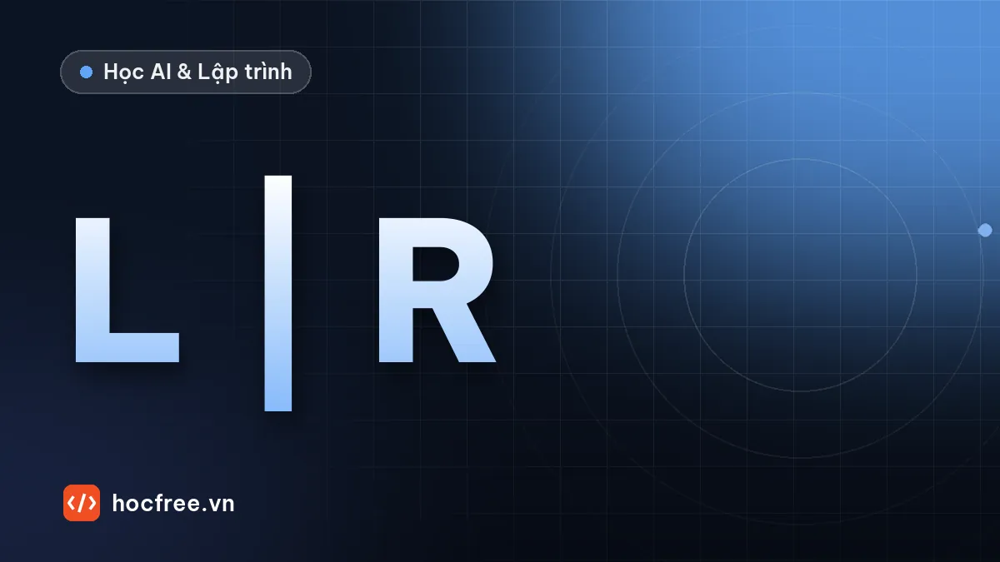

Stereo với OpenCV: hiệu chuẩn, rectification, bản đồ độ sâu
Trọn quy trình stereo trên cảnh có độ sâu thật: stereoCalibrate, stereoRectify, StereoSGBM, reprojectImageTo3D, bề mặt không kết cấu và độ chụm khác độ đúng.

Học xong bài này, bạn sẽ
- Hiệu chuẩn stereo và rectify, kiểm tra lệch dọc
- Tính disparity bằng StereoSGBM, đổi sang 3D
- Nhận ra điểm thiếu, điểm sai và giới hạn độ đúng
Nên học trước: Laser tam giác: từ vạch laser đến bản đồ chiều cao
Nội dung bài viết
Stereo là cách "rẻ" nhất để có 3D: hai camera công nghiệp bình thường, không máy chiếu, không laser, một lần chụp cho cả vùng nhìn, chụp được cả vật đang chuyển động. Bài trước của chặng tính ra rằng sai số độ sâu của stereo tăng theo bình phương khoảng cách và cần bề mặt có kết cấu. Bài này đi qua toàn bộ quy trình stereo bằng OpenCV, trên một cảnh tổng hợp mà bạn biết độ sâu thật tới từng pixel: hiệu chuẩn stereo bằng bàn cờ, rectification (nắn hai ảnh cho các hàng thẳng nhau), bản đồ disparity bằng StereoSGBM, đổi sang tọa độ 3D, rồi đo chiều cao vật so với mặt bàn. Kèm theo là ba cái bẫy có số liệu: vùng chỉ một camera nhìn thấy, bề mặt không kết cấu, và độ chụm không bằng độ đúng.
Cần NumPy và OpenCV. Các khối code nối tiếp nhau trong cùng một file. Nên học trước: cảm biến 3D: chọn công nghệ, hiệu chuẩn camera: nội tại và méo ống kính.
1. Dựng cảnh và hai camera
Cảnh nhìn từ trên xuống: mặt bàn cách camera trái 600 mm, một khối hộp cao 60 mm có kết cấu, và một khối kim loại cao 25 mm có mặt trên đồng màu (không kết cấu). Hai camera giống nhau (f = 900 px, ảnh 640 × 480), cách nhau khoảng 80 mm; camera phải bị lắp hơi xoay (khoảng 1,8°) và hơi lệch cao, như mọi bộ stereo tự lắp. Hàm chup dò tia (ray casting) từ từng pixel tới cảnh để tạo ảnh, và trả về độ sâu thật để ta chấm điểm. Hệ tọa độ thế giới trùng với camera trái.
import cv2
import numpy as np
W, H = 640, 480
K = np.array([[900.0, 0, 320], [0, 900.0, 240], [0, 0, 1]]) # cùng ma trận nội tại cho hai camera
B = 80.0 # baseline 80 mm
R_phai, _ = cv2.Rodrigues(np.array([0.004, -0.03, 0.006])) # camera phải hơi xoay: lắp ráp không hoàn hảo
C_phai = np.array([B, 1.5, -2.0]) # và hơi lệch cao, lệch sâu
Z_DE, Z_HOP, Z_TAM = 600.0, 540.0, 575.0 # mặt bàn 600 mm; hộp cao 60 mm; tấm kim loại cao 25 mm
HOP = (-70.0, 10.0, -45.0, 35.0) # x0, x1, y0, y1 của khối hộp có kết cấu (mm)
TAM = (30.0, 80.0, 40.0, 110.0) # khối kim loại mặt trên đồng màu, không kết cấu
rng = np.random.default_rng(0)
_nhieu = rng.normal(0, 1, (1800, 1800)).astype(np.float32)
KET_CAU = sum(cv2.GaussianBlur(_nhieu, (0, 0), s) * s for s in (1.5, 4, 10)) # kết cấu ngẫu nhiên nhiều tầng
KET_CAU = cv2.normalize(KET_CAU, None, 40, 215, cv2.NORM_MINMAX)
def tra_ket_cau(u, v):
"""Kết cấu bề mặt theo tọa độ thế giới (mm): 3 pixel kết cấu mỗi mm, phủ khoảng ±260 mm."""
mx = ((u + 260) * 3).astype(np.float32)
my = ((v + 260) * 3).astype(np.float32)
return cv2.remap(KET_CAU, mx, my, cv2.INTER_LINEAR, borderMode=cv2.BORDER_REFLECT)
def chup(R_cam, C_cam, chieu_mau=False):
"""Dò tia từ từng pixel của camera (R: thế giới → camera, C: tâm camera) tới cảnh; trả về ảnh xám và độ sâu Z thế giới.
chieu_mau=True: một máy chiếu cố định chiếu mẫu chấm ngẫu nhiên lên cảnh (stereo chủ động)."""
u, v = np.meshgrid(np.arange(W), np.arange(H))
d = (R_cam.T @ (np.linalg.inv(K) @ np.stack([u.ravel(), v.ravel(), np.ones(u.size)]))).T # hướng tia, hệ thế giới
O = C_cam
ung_vien = [] # (t, Z, giá trị kết cấu) của từng bề mặt
t = (Z_DE - O[2]) / d[:, 2] # mặt bàn
ung_vien.append((t, Z_DE + 0 * t, tra_ket_cau((O[0] + t * d[:, 0]).reshape(H, W), (O[1] + t * d[:, 1]).reshape(H, W)).ravel()))
for (x0, x1, y0, y1), z_tren, deu in ((HOP, Z_HOP, False), (TAM, Z_TAM, True)):
t = (z_tren - O[2]) / d[:, 2] # mặt trên
X, Y = O[0] + t * d[:, 0], O[1] + t * d[:, 1]
ok = (X >= x0) & (X <= x1) & (Y >= y0) & (Y <= y1)
g = np.full(t.shape, 150.0) if deu else tra_ket_cau(X.reshape(H, W), Y.reshape(H, W)).ravel()
if deu and chieu_mau: # mẫu chiếu gắn với vị trí trong cảnh, như kết cấu
g = 150.0 + 0.6 * (tra_ket_cau(X.reshape(H, W) * 1.7 + 300, Y.reshape(H, W) * 1.7).ravel() - 128)
ung_vien.append((np.where(ok, t, np.inf), z_tren + 0 * t, g))
for truc, gia_tri in ((0, x0), (0, x1), (1, y0), (1, y1)): # bốn mặt bên
with np.errstate(divide="ignore", invalid="ignore"):
t = (gia_tri - O[truc]) / d[:, truc]
P = O[None, :] + t[:, None] * d
khac = 1 - truc
lim = (y0, y1) if truc == 0 else (x0, x1)
ok = (t > 0) & (P[:, 2] >= z_tren) & (P[:, 2] <= Z_DE) & (P[:, khac] >= lim[0]) & (P[:, khac] <= lim[1])
g = tra_ket_cau(P[:, khac].reshape(H, W), (0.2 * (P[:, 2] - z_tren)).reshape(H, W)).ravel() * 0.8
ung_vien.append((np.where(ok, t, np.inf), P[:, 2], g))
t_all = np.stack([c[0] for c in ung_vien])
k = t_all.argmin(axis=0)
idx = np.arange(u.size)
Z = np.stack([c[1] for c in ung_vien])[k, idx]
G = np.stack([c[2] for c in ung_vien])[k, idx]
anh = np.clip(G + rng.normal(0, 2, G.shape), 0, 255).reshape(H, W).astype(np.uint8)
return anh, Z.reshape(H, W)
anh_trai, z_trai = chup(np.eye(3), np.zeros(3))
anh_phai, _ = chup(R_phai, C_phai)
print(anh_trai.shape, "| độ sâu thật ở tâm ảnh trái:", round(float(z_trai[240, 320]), 1), "mm",
"| ở góc trên trái:", round(float(z_trai[20, 20]), 1), "mm")(480, 640) | độ sâu thật ở tâm ảnh trái: 540.0 mm | ở góc trên trái: 600.0 mm2. Hiệu chuẩn stereo
Hiệu chuẩn stereo tìm phép biến đổi giữa hai camera: ma trận xoay R và vector tịnh tiến T sao cho một điểm X trong hệ camera trái có tọa độ R·X + T trong hệ camera phải. Quy trình giống hệt hiệu chuẩn một camera (bài hiệu chuẩn nội tại): chụp bàn cờ ở nhiều tư thế, nhưng bằng cả hai camera cùng lúc. Ở đây tọa độ góc bàn cờ được tạo bằng projectPoints rồi cộng sai số 0,1 px, đóng vai findChessboardCorners + cornerSubPix trên ảnh thật. Cách làm hay dùng: hiệu chuẩn nội tại từng camera trước, rồi stereoCalibrate với cờ CALIB_FIX_INTRINSIC để chỉ tìm R, T.
cot, hang, o_mm = 9, 6, 20.0 # bàn cờ 9 × 6 góc trong, ô 20 mm
diem_3d = np.zeros((cot * hang, 3), np.float32)
diem_3d[:, :2] = np.mgrid[0:cot, 0:hang].T.reshape(-1, 2) * o_mm
D0 = np.zeros(5) # mô phỏng ống kính không méo
ds_3d, ds_trai, ds_phai = [], [], []
while len(ds_3d) < 15: # 15 tư thế bàn cờ thấy trọn trong cả hai ảnh
rvec = rng.uniform(-0.45, 0.45, 3)
R_b, _ = cv2.Rodrigues(rvec)
tvec = np.array([rng.uniform(-90, 0), rng.uniform(-70, -20), rng.uniform(420, 650)])
p_trai = cv2.projectPoints(diem_3d, rvec, tvec, K, D0)[0].reshape(-1, 2)
rv_p, _ = cv2.Rodrigues(R_phai @ R_b) # tư thế bàn cờ nhìn từ camera phải
p_phai = cv2.projectPoints(diem_3d, rv_p, R_phai @ (tvec - C_phai), K, D0)[0].reshape(-1, 2)
if all(((p > 5) & (p < [W - 5, H - 5])).all() for p in (p_trai, p_phai)):
ds_3d.append(diem_3d)
ds_trai.append((p_trai + rng.normal(0, 0.1, p_trai.shape)).astype(np.float32)) # tìm góc có sai số 0,1 px
ds_phai.append((p_phai + rng.normal(0, 0.1, p_phai.shape)).astype(np.float32))
err_t, K_t, D_t, _, _ = cv2.calibrateCamera(ds_3d, ds_trai, (W, H), None, None)
err_p, K_p, D_p, _, _ = cv2.calibrateCamera(ds_3d, ds_phai, (W, H), None, None)
err_s, K_t, D_t, K_p, D_p, R, T, E, F = cv2.stereoCalibrate(
ds_3d, ds_trai, ds_phai, K_t, D_t, K_p, D_p, (W, H), flags=cv2.CALIB_FIX_INTRINSIC)
T_that = -R_phai @ C_phai
print(f"sai số reprojection: trái {err_t:.3f} px, phải {err_p:.3f} px, stereo {err_s:.3f} px")
print(f"tiêu cự tìm được: trái {K_t[0, 0]:.1f}, phải {K_p[0, 0]:.1f} (thật 900)")
print(f"T tìm được: {np.round(T.ravel(), 2).tolist()} mm, thật {np.round(T_that, 2).tolist()} mm; "
f"baseline {np.linalg.norm(T):.2f} mm")
print(f"góc xoay giữa hai camera: tìm được {np.degrees(np.linalg.norm(cv2.Rodrigues(R)[0])):.3f}°, "
f"thật {np.degrees(np.linalg.norm(cv2.Rodrigues(R_phai)[0])):.3f}°")sai số reprojection: trái 0.138 px, phải 0.138 px, stereo 0.141 px
tiêu cự tìm được: trái 900.3, phải 899.8 (thật 900)
T tìm được: [-79.99, -2.0, -0.36] mm, thật [-80.01, -1.98, -0.41] mm; baseline 80.01 mm
góc xoay giữa hai camera: tìm được 1.705°, thật 1.768°Tiêu cự, baseline và T đều được tìm lại rất sát giá trị thật; sai số reprojection khoảng 0,14 px, cỡ sai số tìm góc đã cài. Với bộ stereo thật, sai số reprojection stereo dưới khoảng 0,5 px thường là dấu hiệu hiệu chuẩn ổn; lớn hơn nhiều thì xem lại ảnh bàn cờ (mờ, phản xạ), độ phẳng của bàn cờ, và hai camera có chụp đồng thời không (chụp lệch thời điểm khi bàn cờ đang cầm tay là lỗi rất hay gặp; dùng trigger phần cứng chung cho hai camera).
3. Rectification: nắn để các hàng thẳng nhau
Tìm điểm tương ứng giữa hai ảnh là bài toán tìm kiếm 2D. Rectification xoay ảo hai camera sao cho chúng song song tuyệt đối: khi đó một điểm nằm ở cùng một hàng trong hai ảnh, và chỉ cần tìm theo hàng ngang. stereoRectify tính hai phép xoay (R1, R2), hai ma trận chiếu mới (P1, P2) và ma trận Q để đổi disparity sang 3D; initUndistortRectifyMap + remap áp phép nắn (và bỏ méo ống kính) lên ảnh. Kiểm tra bằng cách khớp điểm ORB giữa hai ảnh và đo lệch theo hàng trước và sau:
R1, R2, P1, P2, Q, roi1, roi2 = cv2.stereoRectify(K_t, D_t, K_p, D_p, (W, H), R, T, alpha=0)
map_t = cv2.initUndistortRectifyMap(K_t, D_t, R1, P1, (W, H), cv2.CV_32FC1)
map_p = cv2.initUndistortRectifyMap(K_p, D_p, R2, P2, (W, H), cv2.CV_32FC1)
rect_t = cv2.remap(anh_trai, *map_t, cv2.INTER_LINEAR)
rect_p = cv2.remap(anh_phai, *map_p, cv2.INTER_LINEAR)
def lech_doc(a, b):
"""Trung vị |Δy| của các cặp điểm ORB khớp nhau: sau rectification phải gần 0."""
orb = cv2.ORB_create(1500)
k1, d1 = orb.detectAndCompute(a, None)
k2, d2 = orb.detectAndCompute(b, None)
cap = cv2.BFMatcher(cv2.NORM_HAMMING, crossCheck=True).match(d1, d2)
dy = np.array([k1[m.queryIdx].pt[1] - k2[m.trainIdx].pt[1] for m in cap])
return np.median(np.abs(dy)), len(cap)
print("lệch dọc trước rectification: %.2f px (%d cặp)" % lech_doc(anh_trai, anh_phai))
print("lệch dọc sau rectification : %.2f px (%d cặp)" % lech_doc(rect_t, rect_p))
print(f"tiêu cự sau rectification f = {P1[0, 0]:.1f} px, baseline từ P2: {-P2[0, 3] / P2[0, 0]:.2f} mm")lệch dọc trước rectification: 6.91 px (745 cặp)
lệch dọc sau rectification : 0.00 px (794 cặp)
tiêu cự sau rectification f = 962.7 px, baseline từ P2: 80.01 mmTrước rectification, các cặp điểm lệch nhau gần 7 hàng (do camera phải xoay và lệch cao); sau đó lệch dọc bằng 0. Đây là bước kiểm tra nên làm mỗi lần hiệu chuẩn lại bộ stereo thật: lệch dọc sau rectification lớn hơn khoảng nửa pixel là disparity sẽ sai. Lưu ý stereoRectify có thể đổi tiêu cự (ở đây thành khoảng 963 px) để ảnh nắn không có viền đen (alpha=0); mọi phép tính sau dùng P1, P2, Q mới, không dùng K cũ.
4. Bản đồ disparity với StereoSGBM, rồi sang 3D
StereoSGBM (Semi-Global Block Matching) so khớp từng khối nhỏ quanh pixel dọc theo hàng, và thêm ràng buộc "trơn": hai pixel kề nhau phải có disparity gần nhau, trừ khi có bằng chứng mạnh (phạt P1 cho đổi 1 đơn vị, P2 cho đổi nhiều hơn). Các tham số chính được chú thích trong code. Kết quả trả về dạng số nguyên nhân 16 (disparity × 16), nên phải chia 16. reprojectImageTo3D dùng Q để đổi mỗi pixel có disparity thành (X, Y, Z) trong hệ camera trái đã rectify. Để chấm điểm, độ sâu thật cũng được đưa sang đúng hệ đó.
khoi = 5
sgbm = cv2.StereoSGBM_create(
minDisparity=0, numDisparities=192, # dải tìm kiếm (bội số của 16): phải chứa disparity của vật gần nhất
blockSize=khoi,
P1=8 * khoi ** 2, P2=32 * khoi ** 2, # phạt đổi disparity nhỏ / lớn giữa pixel kề nhau: làm mượt
uniquenessRatio=10, # loại khớp không rõ ràng
speckleWindowSize=100, speckleRange=2, # loại các mảng disparity nhỏ lạc loài
disp12MaxDiff=1, # kiểm tra trái-phải: loại điểm bị khuất
mode=cv2.STEREO_SGBM_MODE_SGBM_3WAY)
disp = sgbm.compute(rect_t, rect_p).astype(np.float32) / 16.0 # OpenCV trả disparity ×16 (fixed-point)
hop_le = disp > 0
xyz = cv2.reprojectImageTo3D(disp, Q) # tọa độ 3D trong hệ camera trái đã rectify
Zs = np.where(hop_le, xyz[:, :, 2], np.nan)
print(f"disparity: {disp[hop_le].min():.1f}–{disp[hop_le].max():.1f} px; điểm hợp lệ {100 * hop_le.mean():.1f}%")
# độ sâu thật ở hệ đã rectify: đưa độ sâu thật của camera trái qua R1 và bản đồ remap
X3 = np.stack(np.meshgrid(np.arange(W), np.arange(H)), -1).reshape(-1, 2)
tia = (np.linalg.inv(K) @ np.c_[X3, np.ones(len(X3))].T).T * z_trai.reshape(-1, 1) # điểm 3D thật, hệ camera trái
Z_rect_that = cv2.remap((tia @ R1.T)[:, 2].reshape(H, W).astype(np.float32), *map_t, cv2.INTER_NEAREST)
sai = Zs - Z_rect_that
print(f"sai số độ sâu (điểm hợp lệ): trung vị {np.nanmedian(sai):+.2f} mm, "
f"MAD×1,48 {1.4826 * np.nanmedian(np.abs(sai - np.nanmedian(sai))):.2f} mm, "
f"{100 * np.nanmean(np.abs(sai) > 5):.1f}% điểm sai quá 5 mm")disparity: 123.9–143.2 px; điểm hợp lệ 68.2%
sai số độ sâu (điểm hợp lệ): trung vị +0.07 mm, MAD×1,48 1.42 mm, 1.8% điểm sai quá 5 mmỞ các điểm có disparity, sai số độ sâu có trung vị gần 0 và độ phân tán khoảng 1,4 mm ở khoảng cách 600 mm. Nhưng chỉ khoảng 70% số pixel có disparity. Mục tiếp theo tìm xem phần còn lại mất ở đâu.
5. Điểm thiếu, điểm sai và đo chiều cao đúng cách
diem_that = tia.reshape(H, W, 3) # điểm 3D thật theo pixel ảnh trái (chưa rectify)
la_tam_kl = (z_trai == Z_TAM).astype(np.uint8)
la_mat_hop = (z_trai == Z_HOP).astype(np.uint8)
tam_kl = cv2.remap(la_tam_kl, *map_t, cv2.INTER_NEAREST).astype(bool) # đưa mặt nạ sang ảnh đã rectify
mat_hop = cv2.remap(la_mat_hop, *map_t, cv2.INTER_NEAREST).astype(bool)
dai_trai = np.zeros((H, W), bool)
dai_trai[:, :int(disp[hop_le].max()) + 1] = True # cột mà camera phải không nhìn thấy
for ten, vung in (("dải mép trái (chỉ camera trái thấy)", dai_trai),
("tấm kim loại không kết cấu", tam_kl & ~dai_trai),
("phần còn lại", ~tam_kl & ~dai_trai)):
print(f"{ten:38s}: {100 * vung.mean():4.1f}% ảnh, trong đó không có disparity {100 * (~hop_le[vung]).mean():5.1f}%")
mat_ban = hop_le & (cv2.remap((z_trai == Z_DE).astype(np.uint8), *map_t, cv2.INTER_NEAREST) > 0) & ~dai_trai
P_ban = xyz[mat_ban]
tam = P_ban.mean(axis=0)
_, _, Vt = np.linalg.svd(P_ban - tam, full_matrices=False)
n = Vt[2] * np.sign(Vt[2, 2]) # pháp tuyến mặt bàn, hướng ra xa camera
def cao_so_voi_ban(P):
return (tam - P) @ n # dương: cao hơn mặt bàn (gần camera hơn)
du = cao_so_voi_ban(P_ban)
s_z = 1.4826 * np.median(np.abs(du))
print(f"mặt bàn nghiêng {np.degrees(np.arccos(abs(n[2]))):.2f}° so với trục Z đã rectify; "
f"độ phân tán quanh mặt phẳng fit {s_z:.2f} mm → Δd tương đương = σ·f·B/Z² = "
f"{s_z * P1[0, 0] * 80.0 / np.median(xyz[mat_ban][:, 2]) ** 2:.2f} px")
print(f"chiều cao hộp (so với mặt bàn fit): {np.median(cao_so_voi_ban(xyz[mat_hop & hop_le])):.2f} mm (thật 60,00); "
f"cách ngây thơ (hiệu trung vị Z): {np.nanmedian(Zs[mat_ban]) - np.nanmedian(Zs[mat_hop & hop_le]):.2f} mm")
cao_tam = cao_so_voi_ban(xyz[tam_kl & hop_le])
print(f"khối kim loại không kết cấu (thật cao 25,00 mm): {100 * (tam_kl & hop_le).sum() / tam_kl.sum():.0f}% điểm có giá trị, "
f"chiều cao đo được từ {cao_tam.min():.1f} đến {cao_tam.max():.1f} mm, trung vị {np.median(cao_tam):.1f} mm")dải mép trái (chỉ camera trái thấy) : 22.5% ảnh, trong đó không có disparity 100.0%
tấm kim loại không kết cấu : 3.2% ảnh, trong đó không có disparity 45.1%
phần còn lại : 74.3% ảnh, trong đó không có disparity 10.6%
mặt bàn nghiêng 1.59° so với trục Z đã rectify; độ phân tán quanh mặt phẳng fit 1.42 mm → Δd tương đương = σ·f·B/Z² = 0.30 px
chiều cao hộp (so với mặt bàn fit): 59.93 mm (thật 60,00); cách ngây thơ (hiệu trung vị Z): 63.12 mm
khối kim loại không kết cấu (thật cao 25,00 mm): 55% điểm có giá trị, chiều cao đo được từ -21.0 đến 30.8 mm, trung vị -0.5 mmBốn bài học từ các con số trên:
- Dải mép trái (rộng bằng disparity lớn nhất, hơn 140 px) không bao giờ có disparity: camera phải không nhìn thấy vùng đó. Vùng làm việc chung của hai camera nhỏ hơn mỗi ảnh; khi thiết kế, hãy tính vùng chung ở khoảng cách làm việc, không phải vùng nhìn của một camera.
- Đo chiều cao so với mặt chuẩn fit trong 3D: trục Z của hệ đã rectify nghiêng khoảng 1,6° so với pháp tuyến mặt bàn, nên lấy hiệu Z trung vị cho chiều cao hộp sai hơn 3 mm. Fit mặt phẳng bàn rồi đo khoảng cách theo pháp tuyến cho 59,9 mm, đúng như bài laser tam giác đã dạy.
- Bề mặt không kết cấu sinh ra điểm sai trông như điểm đúng: hơn một nửa số pixel trên khối kim loại vẫn "có disparity", nhưng chiều cao đo được trải từ khoảng −20 đến +30 mm, trung vị gần 0. SGBM đã lấp vùng đồng màu bằng độ sâu lan từ mặt bàn xung quanh (nhờ ràng buộc trơn). Không có cờ nào báo các điểm này là sai. Đây là lý do stereo thụ động không dùng cho bề mặt kim loại, nhựa đồng màu; bài tập 1 sửa bằng stereo chủ động.
- Độ chụm khớp công thức: độ phân tán 1,4 mm trên mặt bàn tương ứng sai số disparity khoảng 0,3 px qua công thức ΔZ = Z²·Δd/(f·B) của bài trước. Muốn chụm hơn: baseline dài hơn, tiêu cự lớn hơn (độ phân giải cao hơn), hoặc đặt gần hơn.
6. Tham số SGBM và các lựa chọn khác
| Tham số | Tác dụng | Gợi ý chọn |
|---|---|---|
minDisparity, numDisparities | Dải disparity được tìm (numDisparities chia hết cho 16) | Tính từ khoảng cách gần nhất, xa nhất: d = f·B/Z; dải càng rộng càng chậm và dải mép không có kết quả càng rộng |
blockSize | Cỡ khối so khớp (lẻ) | Nhỏ: giữ mép sắc nhưng nhiễu hơn; lớn: mượt nhưng mép bị "loe" (bài tập 2) |
P1, P2 | Mức phạt khi disparity đổi giữa pixel kề nhau | Công thức thường dùng 8·c·b², 32·c·b² (c: số kênh, b: blockSize); P2 > P1 |
uniquenessRatio | Loại khớp khi khớp tốt nhất không vượt hẳn khớp thứ hai | 5–15 |
disp12MaxDiff | Kiểm tra trái–phải: loại điểm mà khớp hai chiều không nhất quán (vùng khuất) | 1 |
speckleWindowSize, speckleRange | Xóa các mảng disparity nhỏ lạc loài | 50–200, 1–2 |
Các camera stereo thương mại (thường kèm máy chiếu mẫu hồng ngoại) chạy thuật toán tương tự trên phần cứng và xuất thẳng ảnh độ sâu hoặc đám mây điểm đã hiệu chỉnh; khi đó công việc của bạn bắt đầu từ mục 5. Phương pháp so khớp bằng học sâu cho bản đồ đặc hơn ở vùng kết cấu yếu, nhưng vẫn phải được kiểm định bằng vật chuẩn như trên.
Tóm tắt
- Quy trình stereo: hiệu chuẩn từng camera →
stereoCalibrate(R, T) →stereoRectify+initUndistortRectifyMap+remap→StereoSGBM(chia 16) →reprojectImageTo3Dvới Q. - Kiểm tra mỗi lần hiệu chuẩn: sai số reprojection, lệch dọc sau rectification (khớp ORB), baseline tìm được so với thiết kế.
- Vùng chỉ một camera thấy, vùng khuất và bề mặt không kết cấu không có hoặc có disparity sai; bề mặt đồng màu có thể bị lấp bằng giá trị sai trông như hợp lệ.
- Đo chiều cao so với mặt chuẩn fit trong 3D; độ chụm theo ΔZ = Z²·Δd/(f·B); độ đúng phải kiểm định bằng vật chuẩn.
Bài tập
Bài 1. Stereo chủ động
Bật máy chiếu mẫu (chieu_mau=True trong chup, mẫu chấm ngẫu nhiên gắn trên mặt khối kim loại) và đo lại chiều cao khối kim loại. So với stereo thụ động ở mục 5.
Xem đáp án
anh_trai_cd, _ = chup(np.eye(3), np.zeros(3), chieu_mau=True) # chụp lại khi máy chiếu bật
anh_phai_cd, _ = chup(R_phai, C_phai, chieu_mau=True)
disp_cd = sgbm.compute(cv2.remap(anh_trai_cd, *map_t, cv2.INTER_LINEAR),
cv2.remap(anh_phai_cd, *map_p, cv2.INTER_LINEAR)).astype(np.float32) / 16.0
xyz_cd = cv2.reprojectImageTo3D(disp_cd, Q)
co = tam_kl & (disp_cd > 0)
cao_cd = cao_so_voi_ban(xyz_cd[co])
print(f"có chiếu mẫu: {100 * co.sum() / tam_kl.sum():.0f}% điểm trên khối kim loại có giá trị, "
f"chiều cao trung vị {np.median(cao_cd):.2f} mm (thật 25,00), phân tán {1.4826 * np.median(np.abs(cao_cd - np.median(cao_cd))):.2f} mm")có chiếu mẫu: 100% điểm trên khối kim loại có giá trị, chiều cao trung vị 25.79 mm (thật 25,00), phân tán 0.42 mmCó mẫu chiếu, gần như mọi điểm trên khối có disparity, chiều cao đo được tập trung quanh 25 mm với độ phân tán dưới nửa milimét, thay vì trải từ −20 đến +30 mm. Trung vị lệch khoảng 0,8 mm so với 25,00: đó là sai số hệ thống như hộp cảnh báo ở mục 5 mô tả (sai lệch dưới pixel của SGBM cộng phần sai số hiệu chuẩn còn lại, thay đổi theo bề mặt và vị trí), không phải do mẫu chiếu. Một hệ stereo dùng để đo phải được hiệu chỉnh và kiểm định bằng vật chuẩn ở đúng vùng làm việc. Trong thực tế, máy chiếu thường dùng hồng ngoại để không làm phiền người, và mẫu được thiết kế để không lặp lại (tránh khớp nhầm).
Bài 2. blockSize: mượt hay sắc?
Chạy SGBM với blockSize 3, 5, 11, 21; đo độ phân tán trên mặt bàn và sai số trung bình trong dải ±6 px quanh mép trên của khối hộp.
Xem đáp án
for kb in (3, 5, 11, 21):
m = cv2.StereoSGBM_create(minDisparity=0, numDisparities=192, blockSize=kb, P1=8 * kb ** 2, P2=32 * kb ** 2,
uniquenessRatio=10, speckleWindowSize=100, speckleRange=2, disp12MaxDiff=1,
mode=cv2.STEREO_SGBM_MODE_SGBM_3WAY)
dsp = m.compute(rect_t, rect_p).astype(np.float32) / 16.0
P = cv2.reprojectImageTo3D(dsp, Q)
ban = mat_ban & (dsp > 0)
du_kb = cao_so_voi_ban(P[ban])
mep = np.zeros((H, W), bool) # dải ±6 px quanh mép trên của khối hộp
cot_hop = np.nonzero(mat_hop.any(axis=0))[0]
hang_mep = np.nonzero(mat_hop.any(axis=1))[0][0]
mep[hang_mep - 6:hang_mep + 6, cot_hop[0] + 10:cot_hop[-1] - 10] = True
sai_mep = np.abs(cv2.reprojectImageTo3D(dsp, Q)[..., 2] - Z_rect_that)[mep & (dsp > 0)]
print(f"blockSize {kb:2d}: phân tán mặt bàn {1.4826 * np.median(np.abs(du_kb - np.median(du_kb))):.2f} mm, "
f"sai số TB ở dải mép hộp {np.mean(sai_mep):5.1f} mm")blockSize 3: phân tán mặt bàn 1.34 mm, sai số TB ở dải mép hộp 3.4 mm
blockSize 5: phân tán mặt bàn 1.44 mm, sai số TB ở dải mép hộp 4.9 mm
blockSize 11: phân tán mặt bàn 1.50 mm, sai số TB ở dải mép hộp 7.9 mm
blockSize 21: phân tán mặt bàn 1.49 mm, sai số TB ở dải mép hộp 9.1 mmỞ cảnh này, độ phân tán trên mặt bàn gần như không đổi theo blockSize (ràng buộc trơn của SGBM đã làm mượt), nhưng sai số ở mép hộp tăng rõ khi khối lớn: một khối chồng lên cả mặt hộp và mặt bàn cho disparity "trung bình" giữa hai mặt, làm mép bị loe. Với đo kích thước, chiều cao gần mép (chân linh kiện, gờ nhỏ), chọn khối nhỏ và chấp nhận nhiễu hơn một chút; với bề mặt rộng, nhiễu nhiều, khối lớn hơn có lợi.
Bài 3. Thiết kế bộ stereo
Cần đo chiều cao kiện hàng ở khoảng cách 1200 mm với độ chụm 2 mm, dùng camera có tiêu cự 1400 px và thuật toán đạt Δd = 0,3 px (như đo được ở mục 5). Baseline tối thiểu là bao nhiêu? Với baseline đó, disparity ở 1200 mm và ở 800 mm (nóc kiện cao) là bao nhiêu, và dải mép không có kết quả rộng bao nhiêu pixel?
Xem đáp án
f_px, dd, Z_xa, Z_gan = 1400.0, 0.3, 1200.0, 800.0
B_min = Z_xa ** 2 * dd / (f_px * 2.0)
print(f"baseline ≥ {B_min:.0f} mm; disparity ở {Z_xa:.0f} mm: {f_px * B_min / Z_xa:.0f} px, "
f"ở {Z_gan:.0f} mm: {f_px * B_min / Z_gan:.0f} px → numDisparities ≥ {16 * int(np.ceil(f_px * B_min / Z_gan / 16))}")baseline ≥ 154 mm; disparity ở 1200 mm: 180 px, ở 800 mm: 270 px → numDisparities ≥ 272Baseline khoảng 154 mm. Disparity từ khoảng 180 px (xa) đến 270 px (gần), nên dải mép bên trái rộng khoảng 270 px không có kết quả: với ảnh rộng 1920 px thì mất khoảng 14% bề rộng. Đặt minDisparity khoảng 176 và numDisparities 96 thay vì tìm từ 0 sẽ nhanh hơn nhiều mà không mất gì.
Bài tiếp theo: Đám mây điểm với Open3D: lọc, fit mặt phẳng, tách vật và so với mẫu.
Nguồn tham khảo: OpenCV: calib3d (stereoCalibrate, stereoRectify, initUndistortRectifyMap, reprojectImageTo3D), OpenCV: StereoSGBM, OpenCV-Python Tutorials: Depth Map from Stereo Images; Hirschmüller (2008), Stereo Processing by Semiglobal Matching and Mutual Information, IEEE TPAMI.
Bài tập thực hành
- Bật mẫu chiếu (stereo chủ động) và đo lại khối không kết cấu.
- Thiết kế baseline và dải disparity cho bài toán ở bài tập 3.
Làm xong bài tập mới chuyển sang bài tiếp theo: tự viết code là cách duy nhất để nhớ lâu.